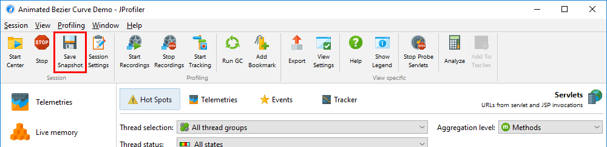
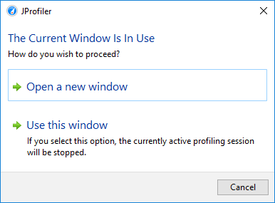
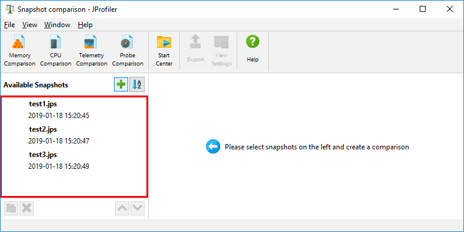
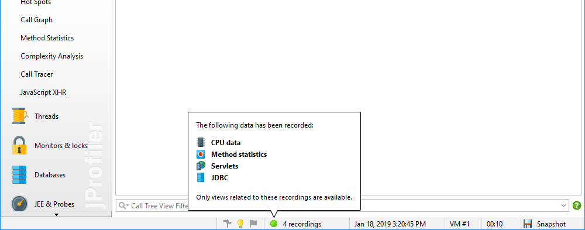
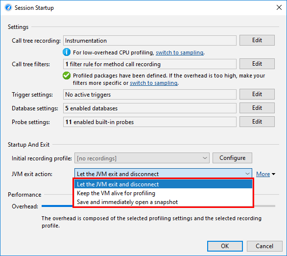
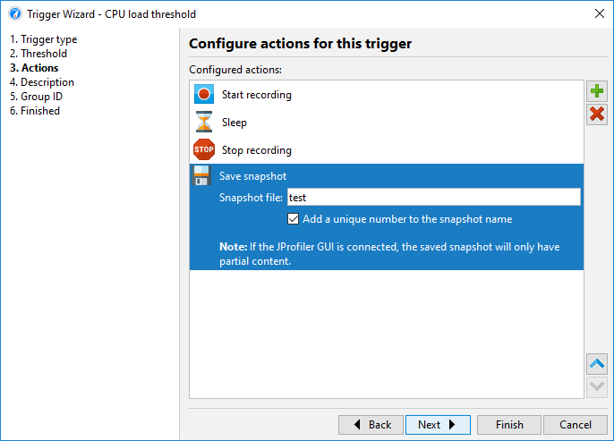
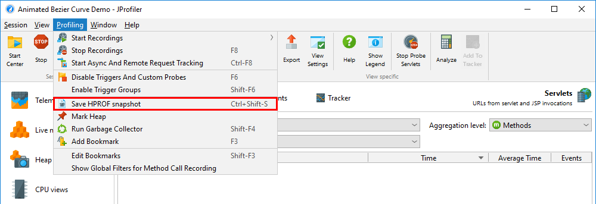
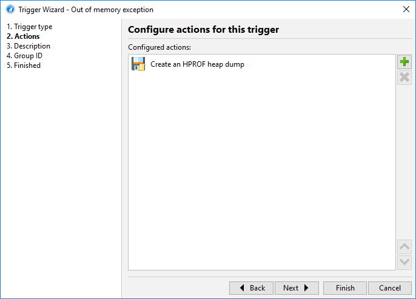

Until now, we have only looked at live sessions where the JProfiler GUI obtains the data from the profiling agent that is running inside the profiled JVM. JProfiler also supports snapshots where all profiling data is written to a file. This can be of advantage in several scenarios:
Snapshots include data from all recordings, including heap snapshots. To save disk space, snapshots are compressed, except for heap walker data which has to remain uncompressed to allow for direct memory mapping.
When you are profiling a live session, you can create snapshots with the Save Snapshot tool bar button. JProfiler pulls all profiling data from the remote agent and saves it to a local file with a ".jps" extension. You can save multiple such snapshots during the course of a live session. They are not opened automatically and you can continue to profile.

Saved snapshots are added automatically to the File->Recent Snapshots menu, so you can conveniently open a snapshot that you have just saved. When opening a snapshot while the live session is still running, you have a choice of terminating the live session or opening another JProfiler window.

When you use the snapshot comparison feature in JProfiler, the list of snapshots is populated with all the the snapshots that you have saved for the current live session. This makes it easy to compare different use cases.

In general, you can open snapshots by invoking Session->Open Snapshot from the main menu or by double-clicking the snapshot file in the file manager. JProfiler's IDE integrations also support opening JProfiler snapshots through the generic Open File actions in the IDEs themselves. In that case, you get source code navigation into the IDE instead of the built-in source code viewer.
When you open a snapshot, all the recording actions are disabled and only views with recorded data are available. To discover what kind of data has been recorded, hover the mouse over the recording label in the status bar.

For a live session, all profiling data resides in the process of the profiled JVM. So when the profiled JVM is terminated, the profiling session in JProfiler is closed as well. To continue profiling when a JVM exits, you have two options, both of which can be activated in the session startup dialog.

The final result of an automated profiling session is always a snapshot or a series of snapshots. In triggers, you can add a "Save a snapshot" action that saves the snapshot on the machine where the profiled JVM is running. When the trigger runs during a live session, the snapshot is also saved on the remote machine and may not include parts of the data that have already been transmitted to the JProfiler GUI.
There are two basic strategies for saving snapshots with triggers:

In situations where taking a heap snapshot produces too much overhead or consumes too much memory, you can use the HPROF heap snapshots that the JVM offers as a built-in feature. Because the profiling agent is not required for this operation, this is interesting for analyzing memory problems in JVMs that are running in production.
With JProfiler, there are three ways to obtain such snapshots:

OutOfMemoryError is thrown. This corresponds to the
VM parameter
-XX:+HeapDumpOnOutOfMemoryError

The jmap executable in the JDK can be used to extract an HPROF heap dump from a running JVM.
JProfiler includes the command line tool jpdump that is more versatile than jmap. It
lets you select a process, can connect to processes running as a service on Windows, has no problems with
mixed 32-bit/64-bit JVMs and auto-numbers HPROF snapshot files. Execute it with the -help
option for more information.